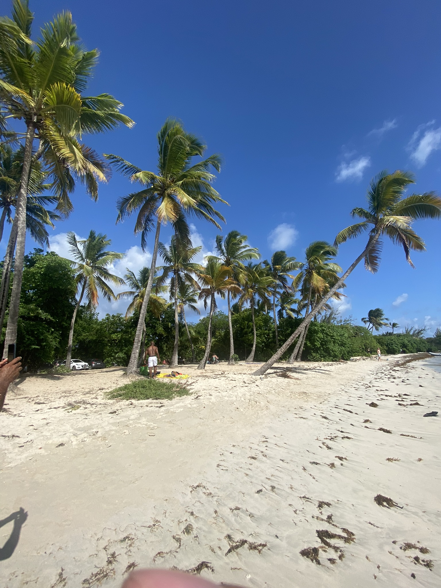
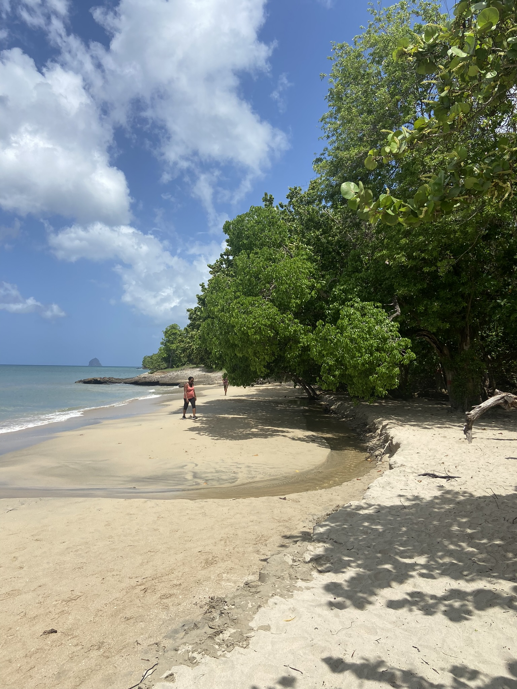
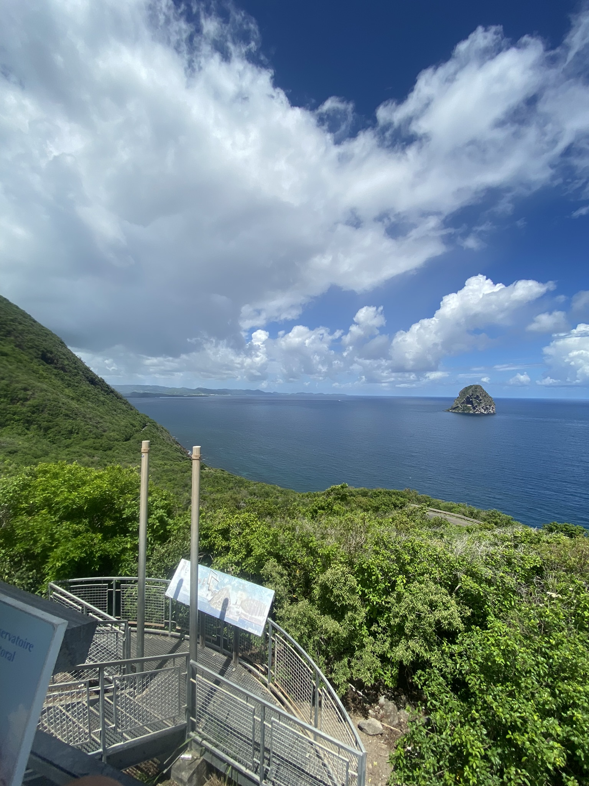
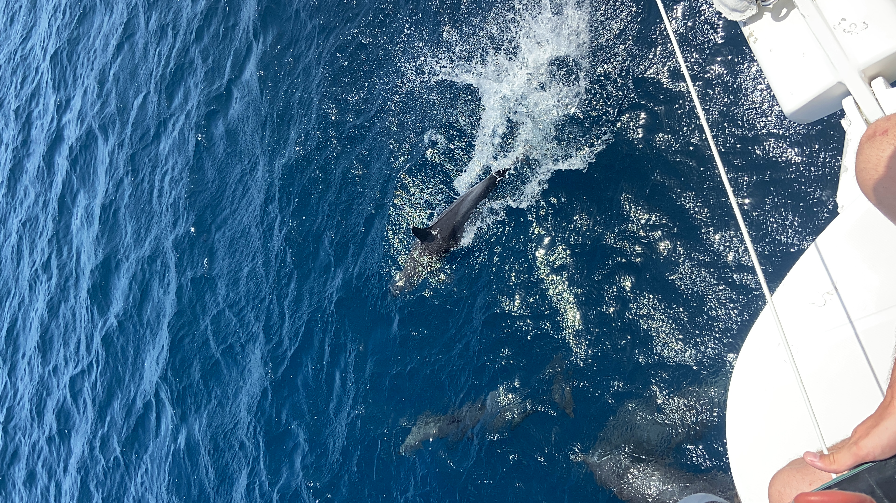
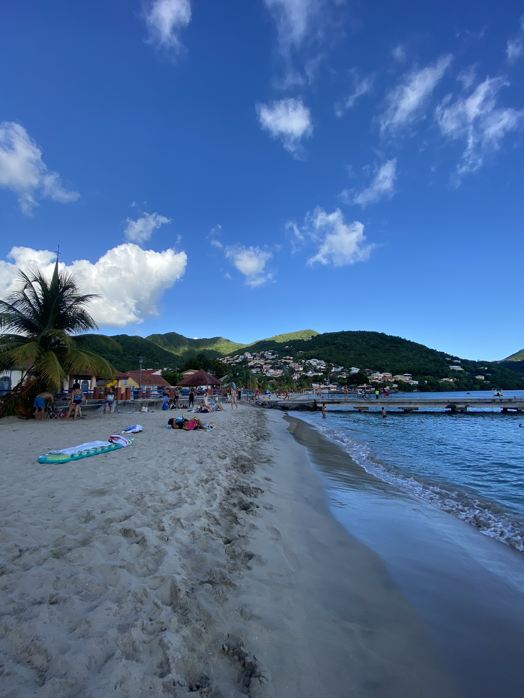
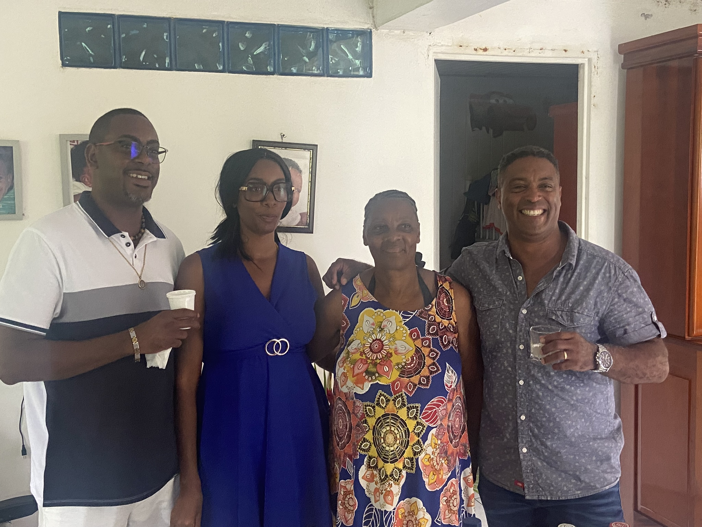

Les Salines
 La plage la plus célèbre de Martinique, sable blanc, cocotiers et eau turquoise à perte de vue.
Le Diamant & son Rocher
Un panorama exceptionnel sur le Rocher du Diamant et une plage sauvage idéale pour les surfeurs.
Les magnifiques dauphins
Les Anses d'Arlet
La famille & du rhum
Un moment convivial en famille autour d'un bon rhum martiniquais, à déguster avec modération !